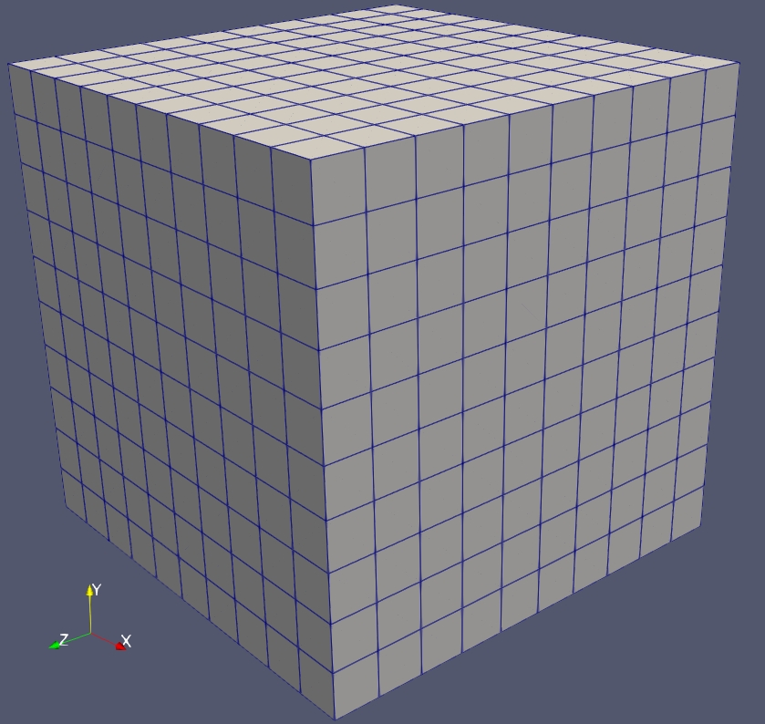

Introduction
Before performing a FEM simulation, you must define the computation domain and discretize it into multiple finite element mesh. To accomplish this, AsFem provides the mesh block.
1D example
As an example, let's consider a 1D solid line that needs to be discretized into several 1D Lagrange meshes. This can be achieved using the following input file:
"mesh":{
"type":"asfem",
"dim":1,
"nx":20,
"xmax":1.5,
"meshtype":"edge2",
"savemesh":true
}
Options
The type option in the mesh block determines the type of mesh generation to be used. AsFem provides two types of mesh generation: built-in mesh generation for regular domains (such as 1D lines, 2D rectangles, and 3D cubes), and external mesh generation using pre-generated mesh files in standard formats such as Gmsh, Netgen, or Abaqus. For the second option, users can import their own mesh from other packages, such as Gmsh (using "type": "gmsh") or Netgen (using "type":"gmsh2").
The dim option specifies the dimension of the computational domain, which can be either 1, 2, or 3.
xmin= and xmax= denote the size of the domain, you will need ymin= and ymax= for the 2D case, and zmin= and zmax= in the 3D case. One can also ignore these options, by default, the size of the domain will be unit, namely [1] in 1D, [1,1] in 2D, [1,1,1] in 3D.
The xmin and xmax options in the "mesh" block specify the size of the computational domain in the x-direction. For 2D cases, ymin and ymax are also needed, while for 3D cases, zmin and zmax are required. Users can also omit these options, in which case the domain size defaults to one unit, represented as [1] for 1D cases, [1, 1] for 2D cases, and [1, 1, 1] for 3D cases.
The nx, ny, and nz options represent the number of meshes along the x, y, and z axes, respectively.
The meshtype option within the mesh block provides different choices of mesh types. For example, second-order Lagrange mesh can be obtained in 1D by setting "meshtype":"edge3". AsFem currently offers the following mesh types:
edge2,edge3,edge4 // in 1D case
quad4,quad8,quad9 // in 2D case
hex8, hex20,hex27 // in 3D case
If users want to save the mesh created by AsFem, they need to set the "savemesh" option within the "mesh" block to true. The mesh will be saved as a .vtu file named as 'your_input_file_name' + _mesh.vtu (the .i extension in the input file name is removed). For example, if the input file name is test.json, the mesh fie name will be test_mesh.vtu. l
2D and 3D mesh
Similarly, for 2D and 3D cases, one can use:
"mesh":{
"type":"asfem",
"dim":2,
"nx":5,
"ny":15,
"xmax":0.5,
"ymax":1.5,
"meshtype":"quad4",
"savemesh":true
}
and
"mesh":{
"type":"asfem",
"dim":3,
"nx":5,
"ny":20,
"nz":20,
"xmax":0.5,
"ymax":0.5,
"zmax":2.0,
"meshtype":"hex8",
"savemesh":true
}
Or, one can also use:
"mesh":{
"type":"asfem",
"dim":3,
"nx":5,
"ny":20,
"nz":20,
"meshtype":"hex8",
"savemesh":true
}
them a unit domain [0,1]x[0,1]x[0,1] will be used by default in 3D cases.
First try in AsFem
To try the first example in AsFem, users can either create a new text file or use their preferred text editor. Here are some examples using nano or vim:
nano firstrun.json
or
vim firstrun.json
then copy and paste the following mesh block into your firstrun.json:
"mesh":{
"type":"asfem",
"dim":1,
"nx":20,
"xmax":1.5,
"meshtype":"edge2",
"savemesh":true
}
save it and then execute your AsFem as follows:
asfem -i firstrun.json --read-only
or in parallel:
mpirun -np 4 asfem -i firstrun.json --read-only
Here one need the --read-only option, since we do not have a complete input file but only the mesh block. If everthing works fine, you should see the following output:
******************************************************************************
*** Welcome to use AsFem AAA ***
*** A Simple Finite Element Method Program // \\ ***
*** Version: 0.80 Release @ 2022-10-19 // \\ ***
*** PETSc version: 3.18.5 // \\ ***
*** License: GPL-3.0 // \\ ***
*** Author: Yang Bai @ M3-Group //_________\\ ***
*** Contact: yangbai90@outlook.com //-----------\\ ***
*** QQ Group: 879908352 // \\ ***
*** Website: https://github.com/M3Group/AsFem // \\ ***
*** Feel free to use and discuss .:. ** ** ***
******************************************************************************
******************************************************************************
*** Start to read the input file ***
*** mesh generator is done, your mesh is generated ***
*** save mesh to step1-3d-mesh.vtu ***
******************************************************************************
******************************************************************************
*** Warning:no [bcs] block found in your input file, then the 'zero' n !!! ***
*** eumann bc is assumed !!! ***
******************************************************************************
******************************************************************************
*** Warning:no [ics] block found in your input file, then no any initi !!! ***
*** al conditions will be applied !!! ***
******************************************************************************
******************************************************************************
*** Warning:no [projection] block found in your input file, then no qu !!! ***
*** antities will be projected !!! ***
******************************************************************************
******************************************************************************
*** Warning:no [postprocess] block found in your input file, then no p !!! ***
*** ostprocess will be executed !!! ***
******************************************************************************
******************************************************************************
*** Warning:no [nlsolver] block found in your input file, then the def !!! ***
*** ault options will be used !!! ***
******************************************************************************
******************************************************************************
*** Warning:no [output] block found in your input file, then the defau !!! ***
*** lt options will be used !!! ***
******************************************************************************
*** Input file reading is done, elapsed time= 7.00000e-03 [s] ***
******************************************************************************
******************************************************************************
*** Mesh information summary ***
*** nodes= 2646, nodes per bulk elmt= 8, max dim= 3, min dim= 2 ***
*** elmts= 3200, bulk= 2000, surf= 1200, line= 0 ***
*** bulk mesh type is hex8, mesh order= 1 ***
*** total physical group= 7, nodeset physical group= 6 ***
***------------------------------------------------------------------------***
*** phy id phy name dim nodes/elmt elmts ***
*** 1 left 2 4 400 ***
*** 2 right 2 4 400 ***
*** 3 bottom 2 4 100 ***
*** 4 top 2 4 100 ***
*** 5 back 2 4 100 ***
*** 6 front 2 4 100 ***
*** 7 alldomain 3 8 2000 ***
***------------------------------------------------------------------------***
*** nodal phy id phy name nodes number ***
*** 1000 left 441 ***
*** 2000 right 441 ***
*** 3000 bottom 126 ***
*** 4000 top 126 ***
*** 5000 back 126 ***
*** 6000 front 126 ***
******************************************************************************
***------------------------------------------------------------------------***
*** 1 CPU is used for the simulation ***
***------------------------------------------------------------------------***
*** AsFem has been executed in 'read-only' mode ***
******************************************************************************
*** 'Simulation' is done, elapsed time= 9.00000e-03 [s] ***
******************************************************************************
Afterwards, you can visualize the generated 3D mesh using Paraview. The resulting visualization should resemble the following image: 
As a practice for the mesh block, we recommend trying different options to generate the desired mesh before proceeding to the next step.
The complete input files can be found in the examples/tutorial directory.